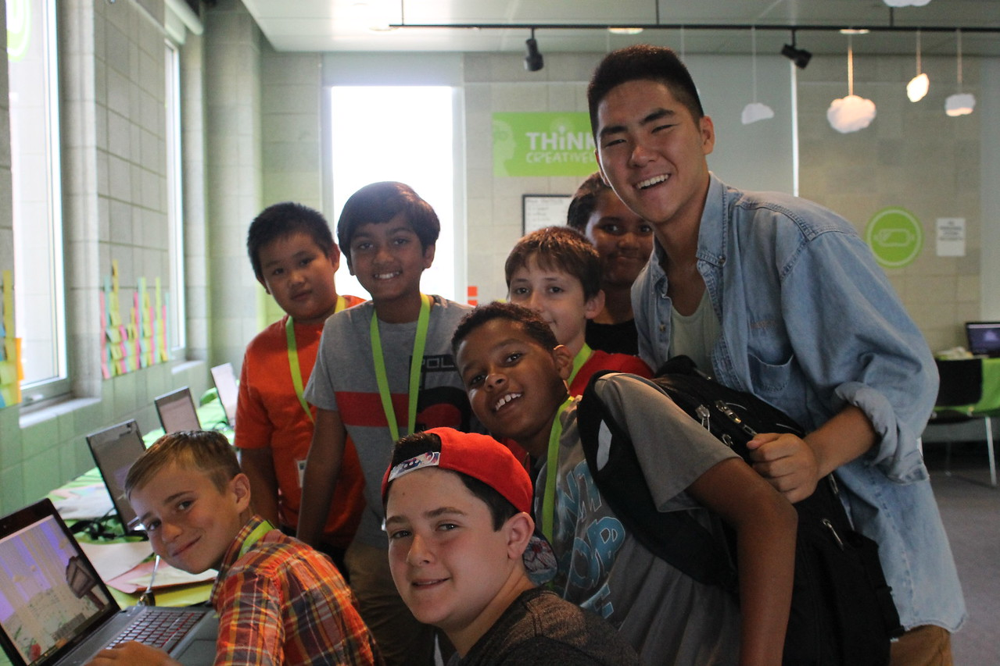

iD Tech
Position: Java InstructorTime: June 2017-August 2017
Location: New York City, NY
During the summer of my freshman year I worked as an instructor for the iD Tech Summer Camps teaching the class "Intro to Java Coding: Modding With Minecraft and Forge". I taught kids the basics of coding in Java, alongside creating their own mods in the Minecraft game, by editing Minecraft source code (Minecraft is written in Java). I created lesson plans and tried to find interactive ways of getting my students excited. I taught topics such as:
- Print Statements
- Variables and Operators
- If-Else Statements
- For and While Loops
- Inheritance (Necessary for Minecraft)
- User Inputs
The age ranges for the kids were 10-12 and each class lasted a week, meaning I got new kids every week. Because it was such a popular course, every single week besides the first, I had the maximum amount of kids an instructor can have: 8 kids. This meant I had to oversee 8 children coding and playing minecraft, every day. While most of them had no coding background, they all learned at different rates. The most difficult part of my job was managing to keep everyone satisfied; I had to find the right balance by giving the more advanced students difficult coding challenges while encouraging and helping the students who were struggling.
Check out my course at iD Tech here

This is one of my classes! If you look at the student's computer screen on the left, you
can see one of the mods that we made as part of the curriculum. The item is a lightning
hammer that creates a big explosion and a bolt of lightning where ever you click. This
helped me teach them modifying variables, to alter explosion size, as well as inherting
methods from Minecraft's Item superclass.